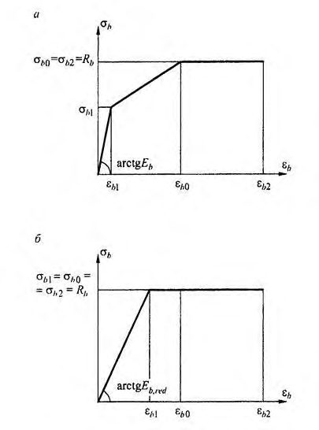
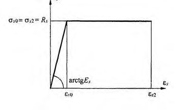
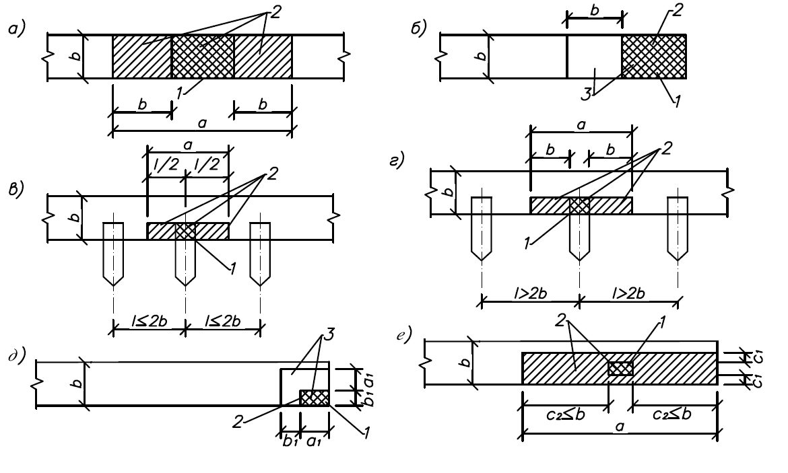
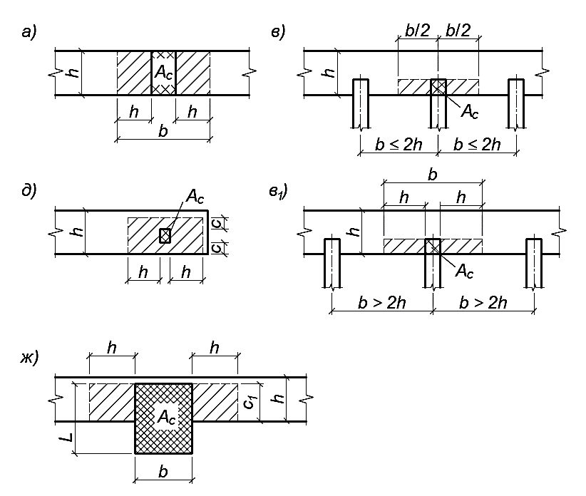
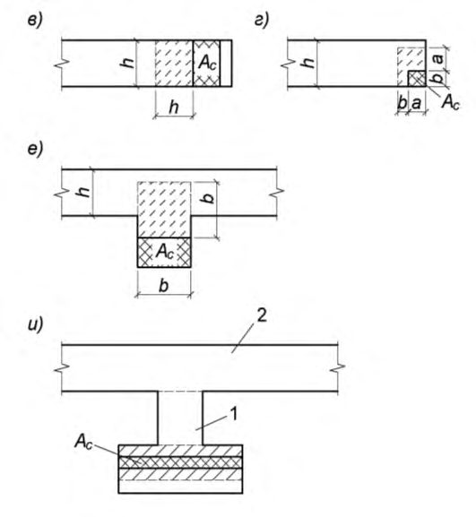
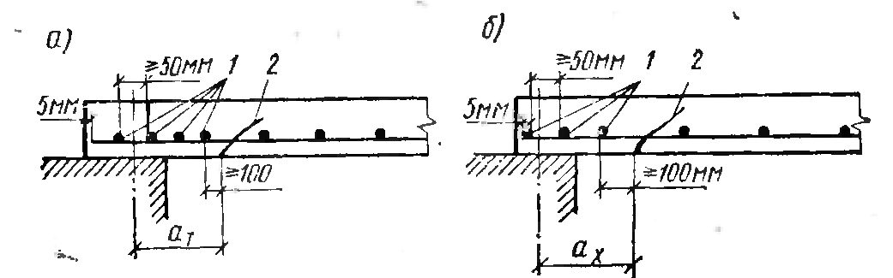

СП 339.1325800.2017 «Конструкции из ячеистых бетонов. Правила проектирования»
О документе: разработчики, утверждение, регистрация, ключевые слова
СП 339.1325800.2017
Издание официальное
- 1 ИСПОЛНИТЕЛЬ - АО «НИЦ «Строительство» - Научно-исследовательский, проектно-конструкторский и технологический институт бетона и железобетона (НИИЖБ) им. А.А. Гвоздева
- 2 ВНЕСЕН Техническим комитетом по стандартизации ТК 465 «Строительство»
и
- 3 ПОДГОТОВЛЕН к утверждению Департаментом градостроительной деятельности и архитектуры Министерства строительства жилищно-коммунального хозяйства Российской Федерации (Минстрой России)
и
- 4 УТВЕРЖДЕН приказом Министерства строительства жилищно-коммунального хозяйства Российской Федерации от 14 ноября 2017 г. № 1532/пр и введен в действие с 15 мая 2018 г.
- 5 ЗАРЕГИСТРИРОВАН Федеральным агентством по техническому регулированию и метрологии (Росстандарт).
- 6 ВВЕДЕН ВПЕРВЫЕ
В случае пересмотра ( замены ) или отмены настоящего свода правил соответствующее уведомление будет опубликовано в установленном порядке. Соответствующая информация, уведомление и тексты размещаются также в информационной системе общего пользования - на официальном сайте разработчика ( Минстрой России ) в сети Интернет
© Минcтрой России, 2017
Настоящий нормативный документ не может быть полностью или частично воспроизведен, тиражирован и распространен в качестве официального издания на территории Российской Федерации без разрешения Минстроя России
СП 339.1325800.2017
Дата введения 2018-05-15
УДК ОКС 91.100.30
Ключевые слова: ячеистый бетон, автоклавный ячеистый бетон, неавтоклавный ячеистый бетон, каменная кладка из ячеистобетонных блоков, камни и блоки, класс ячеистого бетона по прочности, марка ячеистого бетона по средней плотности
\_\_\_\_\_\_\_\_\_\_\_\_\_\_\_\_\_\_\_\_\_\_\_\_\_\_\_\_\_\_\_\_\_\_\_\_\_\_\_\_\_\_\_\_\_\_\_\_\_\_\_\_\_\_\_\_\_\_\_\_\_\_\_\_\_\_\_\_\_\_\_\_\_\_\_\_\_\_\_\_
Введение
Настоящий свод правил разработан в соответствии с Федеральным законом от 30 декабря 2009 г. №384-ФЗ «Технический регламент о безопасности зданий и сооружений», Федеральным законом от 13 июля 2015 г. №261-ФЗ «Об энергосбережении и повышении энергетической эффективности», Федеральным законом от 22 июля 2008 г. № 123-ФЗ «Технический регламент о требованиях пожарной безопасности».
Свод правил выполнен авторским коллективом НИИЖБ им. А.А. Гвоздева института АО «НИЦ «Строительство» (руководитель работы - д-р техн. наук В.Ф. Степанова , д-р техн. наук А.Н. Давидюк , кандидаты техн. наук В.И. Савин , В.Н. Строцкий , инж. С.Г. Зимин ) при участии Национальной Ассоциации Производителей Автоклавного Газобетона (НААГ) (канд. техн. наук Г.И.Гринфельд ), ОАО «Бонолит-Строительные решения» (канд. техн. наук А.А.Шеболдасов ), Березовского завода ООО ПСО «Теплит» (канд. техн. наук А.А. Вишневский ).
1Область применения
Настоящий свод правил распространяется на проектирование бетонных и железобетонных изделий из ячеистых бетонов заводского изготовления, а также на проектирование армированных монолитных конструкций, предназначенных для жилых, общественных, производственных и сельскохозяйственных зданий с сухим, нормальным и влажностным режимами эксплуатации при неагрессивной среде.
Требования настоящего свода правил не распространяются на предварительно напряженные однослойные конструкции (панели, перекрытия, покрытия), на панели специального назначения (вентиляционные, электропанели, дымоходы и др.), а также на проектирование зданий и сооружений, подверженных динамическим нагрузкам, возводимых на подрабатываемых территориях, вечномерзлых грунтах, в сейсмоопасных районах, а также мостов и тоннелей, гидротехнических сооружений, в конструкциях, к которым предъявляются требования по водонепроницаемости.
2Нормативные ссылки
ГОСТ 5781-82 Сталь горячекатаная для армирования железобетонных конструкций. Технические условия
ГОСТ 5802-86 Растворы строительные. Методы испытаний
ГОСТ 6727-80 Проволока из низкоуглеродистой стали холоднотянутая для армирования железобетонных конструкций. Технические условия
ГОСТ 10180-2012 Бетоны. Методы определения прочности по контрольным образцам ГОСТ 10884-94 Сталь арматурная термомеханически упрочненная для железобетонных конструкций. Технические условия
ГОСТ 10922-2012 Арматурные и закладные изделия, их сварные, вязаные и механические соединения для железобетонных конструкций. Общие технические условия
ГОСТ 11118-2009 Панели из автоклавных ячеистых бетонов для наружных стен зданий. Технические условия
СП 339.1325800.2017
ГОСТ 12504-80 Панели стеновые внутренние бетонные и железобетонные для жилых и общественных зданий. Общие технические условия
ГОСТ 13015-2012 Изделия бетонные и железобетонные для строительства. Общие технические требования. Правила приемки, маркировки, транспортирования и хранения
ГОСТ 18105-2010 Бетоны. Правила контроля и оценки прочности
ГОСТ 19010-82 Блоки стеновые бетонные и железобетонные для зданий. Общие технические условия
ГОСТ 19570-74 Панели из автоклавных ячеистых бетонов для внутренних несущих стен, перегородок и перекрытий жилых и общественных зданий. Технические требования (в части перекрытий)
ГОСТ 21520-89 Блоки из ячеистых бетонов стеновые мелкие. Технические условия
ГОСТ 23279-2012 Сетки арматурные сварные для железобетонных конструкций и изделий. Общие технические условия
ГОСТ 25485-89 Бетоны ячеистые. Технические условия
ГОСТ 27005-2014 Бетоны легкие и ячеистые. Правила контроля и оценки средней плотности
ГОСТ 27751-2014 Надежность строительных конструкций и оснований. Основные положения
ГОСТ 31359-2007 Бетоны ячеистые автоклавного твердения. Технические условия
ГОСТ 31360-2007 Изделия стеновые неармированные из ячеистого бетона автоклавного твердения. Технические условия
ГОСТ 31938-2012 Арматура полимерная композитная для армирования бетонных конструкций. Технические условия
СП 15.13330.2012 «СНиП II-22-81* Каменные и армокаменные конструкции» (с изменениями № 1, № 2)
СП 20.13330.2016 «СНиП 2.01.07-85* Нагрузки и воздействия»
СП 22.13330.2016 «СНиП 2.02.01-83* Основания зданий и сооружений»
СП 28.13330.2017 «СНиП 2.03.11-85 Защита строительных конструкций от коррозии»
СП 50.13330.2012 «СНиП 23-02-2003 Тепловая защита зданий»
СП 54.13330.2016 «СНиП 31-01-2003 Здания жилые многоквартирные»
СП 63.13330.2012 «СНиП 52-01-2003 Бетонные и железобетонные конструкции» (с изменениями № 1, № 2, № 3)
СП 70.13330.2012 «СНиП 3.03.01-87 Несущие и ограждающие конструкции» (с изменениями № 1, № 3)
СП 112.13330.2011 «СНиП 21-01-97* Пожарная безопасность зданий и сооружений»
СП 118.13330.2012 «СНиП 31-06-2009 Общественные здания и сооружения» (с изменениями № 1, № 2)
СП 131.13330.2012 «СНиП 23-01-99 Строительная климатология» (с изменениями № 1, № 2)
Примечание -При пользовании настоящим сводом правил целесообразно проверить действие ссылочных документов в информационной системе общего пользования -на официальном сайте федерального органа исполнительной власти в сфере стандартизации в сети Интернет или по ежегодному информационному указателю «Национальные стандарты», который опубликован по состоянию на 1 января текущего года, и по выпускам ежемесячного информационного указателя «Национальные стандарты» за текущий год. Если заменен ссылочный документ, на который дана недатированная ссылка, то рекомендуется использовать действующую версию этого документа с учетом всех
СП 339.1325800.2017 внесенных в данную версию изменений. Если заменен ссылочный документ, на который дана датированная ссылка, то рекомендуется использовать версию этого документа с указанным выше годом утверждения (принятия). Если после утверждения настоящего свода правил в ссылочный документ, на который дана датированная ссылка, внесено изменение, затрагивающее положение, на которое дана ссылка, то это положение рекомендуется применять без учета данного изменения. Если ссылочный документ отменен без замены, то положение, в котором дана ссылка на него, рекомендуется применять в части, не затрагивающей эту ссылку. Сведения о действии сводов правил целесообразно проверить в Федеральном информационном фонде стандартов.
3Термины и определения
В настоящем своде правил применены термины по ГОСТ 11118, ГОСТ 18105, ГОСТ 25192, ГОСТ 31359, ГОСТ 31360, СП 15.13330, СП 63.13330, а также следующие термины с соответствующими определениями:
- 3.1двухслойная конструкция
- Конструкция, состоящая из ячеистого бетона с внутренним слоем из тяжелого или плотного силикатного бетона.
- 3.2конструкционно-теплоизоляционный ячеистый бетон
- Бетон, к которому предъявляются требования по прочностным, деформативным характеристикам, по теплотехническим показателям и долговечности.
- 3.3конструкционный ячеистый бетон
- Бетон, к которому предъявляются требования по прочностным, деформативным характеристикам и по долговечности.
- 3.4нагрузка ( здесь )
- Механическая сила, прилагаемая к строительным конструкциям и (или) основанию здания и сооружения и определяющая их напряженно-деформированное состояние.
- 3.5неавтоклавный ячеистый бетон
- Искусственный каменный материал пористой структуры, изготовленный из вяжущего, тонкомолотого и (или) немолотого кремнезёмистого компонента, порообразователя и воды, твердеющий в естественных условиях или в условиях тепловой обработки при атмосферном давлении.
- 3.6ячеистый фибробетон (фиброгазобетон, фибропенобетон)
- Бетон пористой структуры, содержащий рассредоточенные, беспорядочно ориентированные волокна.
4Требования к расчету бетонных и железобетонных конструкций из ячеистого бетона
4.1Общие положения
СП 339.1325800.2017 агрессивных сред устанавливаются СП 15.13330, СП 20.13330, СП 28.13330, СП 50.13330, СП 63.13330, СП 131.13330.
В зданиях с относительной влажностью воздуха в помещениях от 60% до 75% внутренние поверхности наружных стен и плит покрытий должны быть гидрофобизированы, а в помещениях с относительной влажностью воздуха более 75% внутренние поверхности конструкций должны быть с пароизоляционным покрытием согласно СП 28.13330.
Нормативные значения нагрузок, коэффициентов сочетаний нагрузок и коэффициентов надежности и ответственности конструкций, а также разделение нагрузок на постоянные и временные (длительные и кратковременные) следует назначать по СП 20.13330.
СП 339.1325800.2017
4.2Требования к расчету бетонных и железобетонных элементов по прочности
При жестком соединении наружных и внутренних стен с помощью сварки закладных деталей или замоноличивания арматурных выпусков стены рассчитываются как совместно работающие, т.е. как несущие. В этом случае нагрузки, приходящиеся на наружные стеновые панели или блоки из ячеистых бетонов, определяются из общего расчета зданий как совместной системы продольных, поперечных и горизонтальных дисков с учетом соотношения упругопластических свойств ячеистого бетона и материала внутренних конструкций зданий.
При соединении наружных ячеистобетонных стен с внутренними несущими конструкциями зданий (колоннами или стенами) с помощью горизонтальных гибких стержней и при наличии зазора между стенами и внутренними конструкциями элементы стен (панели или блоки) рассчитываются как самонесущие.
Для элементов статически неопределимых конструкций значение эксцентриситета продольной силы относительно центра тяжести приведенного сечения е 0 принимается равным эксцентриситету, полученному из статического расчета конструкции, но не менее ea . В элементах статически определимых конструкций эксцентриситет е 0 определяется как сумма эксцентриситетов, определяемых из статического расчета конструкции и случайного.
Наибольшее значение эксцентриситета (включая случайный) во внецентренно сжатых стенах из ячеистобетонных мелких блоков без продольной арматуры в растянутой зоне должно быть не более 0,9 у для основных сочетаний нагрузок , 0,95 у для особых сочетаний , в стенах толщиной 25 см и менее: 0,8 у для основных сочетаний нагрузок , 0,85 у для особых сочетаний , при этом расстояние от точки приложения силы до более сжатого края сечения для несущих стен и столбов (простенков) должно быть не менее 2 см, где у - расстояние от центра тяжести сечения элемента до его края в сторону эксцентриситета (для прямоугольных сечений у = h/ 2 ).
СП 339.1325800.2017
4.3Требования к расчету бетонных и железобетонных элементов по трещиностойкости
Однородные конструкции и конструкции с арматурой других видов относятся к 3-й категории трещиностойкости. Предельно допустимая ширина раскрытия трещин для этих конструкций принимается: кратковременная acrc 1 = 0,4 мм, длительная acrc 2 = 0,3 мм.
При расчете ширины раскрытия трещин коэффициент надежности по нагрузке (постоянной, длительной и кратковременной) γ f принимается равным 1.
Указанные категории требований к трещиностойкости железобетонных конструкций относятся к трещинам, нормальным к продольной оси элемента.
Во избежание раскрытия продольных трещин следует принимать конструктивные меры (устанавливать соответствующую поперечную арматуру), а для предварительно напряженных элементов, кроме того, ограничивать значения сжимающих напряжений в бетоне в стадии предварительного обжатия и принимать их не более 0,3 от передаточной прочности бетона.
Примечание - В конструкциях, в которых арматура покрывается антикоррозионным составом, допускается ширина раскрытия трещин acrc 2 до 0,5 мм.
4.4Требования к расчету бетонных и железобетонных конструкций по деформациям
СП 339.1325800.2017
Для элементов покрытий сельскохозяйственных зданий производственного назначения, если прогибы не ограничиваются технологическими или конструктивными требованиями, предельно допустимые прогибы принимаются равными при пролетах: до 6 м - 1/150 пролета, от 6 до 10 м - 4 см.
- не более 1/500 высоты здания - при жестком креплении поэтажно опертых стен (перегородок) к несущим элементам;
- не более 1/300 высоты здания - при податливом креплении.
- 1/500…1/700 высоты этажа при выполнении жесткого (препятствующего взаимным смещениям каркаса, стен или перегородок) крепления к каркасу здания;
- 1/300 высоты этажа при податливом креплении (не препятствующего смещению каркаса, без передачи на стены или перегородки усилий, способных вызвать повреждения конструктивных элементов) стен или перегородок к каркасу здания.
4.5Требования к расчету кладки стен из ячеистобетонных блоков
Расчет стены при ее работе из своей плоскости должен учитывать конструктивное решение опирания стены на диск перекрытия (с учетом эксцентриситета).
- собственную массу кладки стен;
- массу наружного и внутреннего отделочных слоев (в стадии эксплуатации);
- ветровой напор с подветренной и наветренной сторон;
- температурные деформации в результате существующего градиента температуры внутреннего и наружного воздуха (в зимний и летний периоды);
- нагрузку от перемычек;
СП 339.1325800.2017
- нагрузку от элементов заполнения проемов;
- нагрузку от рабочих, выполняющих монтаж оконных и дверных элементов.
5Материалы для бетонных и железобетонных конструкций из ячеистых бетонов
5.1Ячеистый бетон
Основные нормируемые и контролируемые характеристики ячеистого бетона:
Нормируемые характеристики:
- физико-механические (класс по прочности на сжатие В, марка по средней плотности D, марка по морозостойкости F , усадка при высыхании);
- теплофизические (коэффициент теплопроводности λ0, коэффициент паропроницаемости μ).
Контролируемые характеристики:
- начальный модуль упругости Еb - для проектирования изгибаемых конструкций;
- значения сорбционной и десорбционной влажности - для расчетного определения влажности в условиях эксплуатации.
- В1; В1,5; В2; В2,5; В3,5; В5; В 7,5 -конструкционно-теплоизоляционные автоклавного твердения;
- В1,5; В2; В2,5; В3,5; В5; В7,5; В10 -конструкционно-теплоизоляционные неавтоклавного твердения;
- В3,5; В5; В7,5; В10; В12,5; В15 - конструкционные автоклавного и неавтоклавного твердения.
Для каменных конструкций следует предусматривать ячеистые бетоны классов по прочности на сжатие не ниже В1,5.
Для бетонных и железобетонных конструкций - не ниже В1.
Прочность на сжатие ячеистого бетона должна соответствовать ГОСТ 18105.
Для бетонных и железобетонных конструкций следует применять ячеистые бетоны марок по средней плотности по ГОСТ 31359 и ГОСТ 25485.
СП 339.1325800.2017
Фактическое значение средней плотности ячеистого бетона должно быть не выше требуемой, определяемой по ГОСТ 27005.
Значение нормируемой отпускной прочности ячеистого бетона в изделиях заводского изготовления следует назначать в соответствии с ГОСТ 13015 и стандартами на конкретные изделия.
Марки бетона по морозостойкости назначают в зависимости от режима эксплуатации конструкции и расчетных зимних температур наружного воздуха в районах строительства по СП 28.13330 и указывают в рабочих чертежах проекта на конкретное здание.
Нормативные сопротивления сжатию Rbn , растяжению Rbtn и срезу Rshn (с округлением) в зависимости от класса ячеистого бетона по прочности на сжатие В приведены в таблице 5.1.
Таблица 5.1
| Наименование показателя | Нормативные сопротивления ячеистого бетона сжатию R bn , растяжению R btn и срезу R shn ; расчетные сопротивления для предельных состояний второй группы R b,ser , R bt,ser и R sh,ser при классе бетона по прочности на сжатие,МПа | Нормативные сопротивления ячеистого бетона сжатию R bn , растяжению R btn и срезу R shn ; расчетные сопротивления для предельных состояний второй группы R b,ser , R bt,ser и R sh,ser при классе бетона по прочности на сжатие,МПа | Нормативные сопротивления ячеистого бетона сжатию R bn , растяжению R btn и срезу R shn ; расчетные сопротивления для предельных состояний второй группы R b,ser , R bt,ser и R sh,ser при классе бетона по прочности на сжатие,МПа | Нормативные сопротивления ячеистого бетона сжатию R bn , растяжению R btn и срезу R shn ; расчетные сопротивления для предельных состояний второй группы R b,ser , R bt,ser и R sh,ser при классе бетона по прочности на сжатие,МПа | Нормативные сопротивления ячеистого бетона сжатию R bn , растяжению R btn и срезу R shn ; расчетные сопротивления для предельных состояний второй группы R b,ser , R bt,ser и R sh,ser при классе бетона по прочности на сжатие,МПа | Нормативные сопротивления ячеистого бетона сжатию R bn , растяжению R btn и срезу R shn ; расчетные сопротивления для предельных состояний второй группы R b,ser , R bt,ser и R sh,ser при классе бетона по прочности на сжатие,МПа | Нормативные сопротивления ячеистого бетона сжатию R bn , растяжению R btn и срезу R shn ; расчетные сопротивления для предельных состояний второй группы R b,ser , R bt,ser и R sh,ser при классе бетона по прочности на сжатие,МПа | Нормативные сопротивления ячеистого бетона сжатию R bn , растяжению R btn и срезу R shn ; расчетные сопротивления для предельных состояний второй группы R b,ser , R bt,ser и R sh,ser при классе бетона по прочности на сжатие,МПа | Нормативные сопротивления ячеистого бетона сжатию R bn , растяжению R btn и срезу R shn ; расчетные сопротивления для предельных состояний второй группы R b,ser , R bt,ser и R sh,ser при классе бетона по прочности на сжатие,МПа | Нормативные сопротивления ячеистого бетона сжатию R bn , растяжению R btn и срезу R shn ; расчетные сопротивления для предельных состояний второй группы R b,ser , R bt,ser и R sh,ser при классе бетона по прочности на сжатие,МПа |
|---|---|---|---|---|---|---|---|---|---|---|
| B1 | B1,5 | B2,0 | B2,5 | B3,5 | B5 | B7,5 | B10 | B12,5 | B15 | |
| Сопротивление осевому сжатию (призменная прочность) R bn и R b,ser | 0,95 | 1,40 | 1,90 | 2,4 | 3,3 | 4,60 | 6,9 | 9,0 | 10,5 | 11,5 |
| Сопротивление бетонов растяжению R btn и R bt,ser | 0,14 | 0,22 | 0,26 | 0,31 | 0,41 | 0,55 | 0,63 | 0,89 | 1,0 | 1,05 |
| Сопротивление бетонов срезу R shn , R sh,ser | 0,2 | 0,32 | 0,38 | 0,46 | 0,6 | 0,81 | 0,93 | 1,31 | 1,47 | 1,54 |
Таблица 5.2 - Коэффициенты надежности по бетону при сжатии γ bc и при растяжении γ bt
| Расчет конструкций по предельным состояниям групп | Расчет конструкций по предельным состояниям групп | Расчет конструкций по предельным состояниям групп | Расчет конструкций по предельным состояниям групп |
|---|---|---|---|
| первой | первой | второй | второй |
| γ bc | γ bt | γ bc | γ bt |
| 1,5 | 2,3 | 1,0 | 1,0 |
Таблица 5.3 - Расчетные сопротивления ячеистого бетона сжатию, растяжению и срезу для предельных состояний первой группы при классе бетона по прочности на сжатие
| Наименование показателя | Расчетные сопротивления ячеистого бетона для предельных состояний первой группы R b , R bt , R sh , при классе бетона по прочности на сжатие, МПа | Расчетные сопротивления ячеистого бетона для предельных состояний первой группы R b , R bt , R sh , при классе бетона по прочности на сжатие, МПа | Расчетные сопротивления ячеистого бетона для предельных состояний первой группы R b , R bt , R sh , при классе бетона по прочности на сжатие, МПа | Расчетные сопротивления ячеистого бетона для предельных состояний первой группы R b , R bt , R sh , при классе бетона по прочности на сжатие, МПа | Расчетные сопротивления ячеистого бетона для предельных состояний первой группы R b , R bt , R sh , при классе бетона по прочности на сжатие, МПа | Расчетные сопротивления ячеистого бетона для предельных состояний первой группы R b , R bt , R sh , при классе бетона по прочности на сжатие, МПа | Расчетные сопротивления ячеистого бетона для предельных состояний первой группы R b , R bt , R sh , при классе бетона по прочности на сжатие, МПа | Расчетные сопротивления ячеистого бетона для предельных состояний первой группы R b , R bt , R sh , при классе бетона по прочности на сжатие, МПа | Расчетные сопротивления ячеистого бетона для предельных состояний первой группы R b , R bt , R sh , при классе бетона по прочности на сжатие, МПа | Расчетные сопротивления ячеистого бетона для предельных состояний первой группы R b , R bt , R sh , при классе бетона по прочности на сжатие, МПа |
|---|---|---|---|---|---|---|---|---|---|---|
| B1 | B1,5 | B2,0 | B2,5 | B3,5 | B5 | B7,5 | B10 | B12,5 | B15 | |
| Сопротивление осевому сжатию (призменная прочность) R bn и R b,ser | 0,63 | 0,95 | 1,3 | 1,6 | 2,2 | 3,1 | 4,6 | 6,0 | 7,0 | 7,7 |
| Сопротивление бетонов растяжению R btn и R bt,ser | 0,06 | 0,09 | 0,12 | 0,14 | 0,18 | 0,24 | 0,28 | 0,39 | 0,44 | 0,46 |
| Сопротивление бетонов срезу R shn , R sh,ser | 0,09 | 0,14 | 0,17 | 0,20 | 0,26 | 0,35 | 0,40 | 0,57 | 0,64 | 0,67 |
Примечание - Значения нормативных сопротивлений ячеистых бетонов приведены для состояния средней влажности ячеистого бетона 10 % (по массе).
Таблица 5.4 -Коэффициенты условий работы ячеистого бетона
| Факторы, обуславливающие | Коэффициенты условий работы бетона γ bi | Коэффициенты условий работы бетона γ bi |
|---|---|---|
| введение коэффициентов условий работы бетона | условные обозначения | значение |
| 1 Длительность действия нагрузки: а) при учете постоянных, длительных и кратковременных нагрузок, кроме нагрузок непродолжительного действия, суммарная длительность действия которых за период эксплуатации мала (например, крановые нагрузки; ветровые; нагрузки, возникающие при изготовлении, транспортировании и возведении), а также при учете особых нагрузок, вызванных деформациями просадочных, набухающих, вечномерзлых и тому подобных грунтов б) при учете в рассматриваемом сочетании кратковременных | γ b 2 | 0,85 |
| нагрузок (непродолжительного действия) или особых, не указанных в перечислении а) | γ b 2 | 1,10 |
| 2 Бетонирование в вертикальном положении при высоте слоя бетонирования более 1,5 м | γ b 3 | 0,80 |
| 3 Эксплуатация не защищенных от солнечной радиации конструкций согласно СП 131.13330 | γ b 7 | 0,85 |
| 4 Бетонные конструкции | γ b 9 | 0,90 |
| 5 Влажность ячеистого бетона, %: 10 и менее 25 и более от 10 до 25 | γ b 11 | 1,00 0,85 По интер- поляции |
Примечания
1 В таблице приведены коэффициенты условий работы, учитываемые при расчете конструкций из ячеистых бетонов.
2 Если при учете особых нагрузок вводится дополнительный коэффициент γ b2 условий работы меньше единицы согласно указаниям соответствующих документов (например, при учете сейсмических нагрузок), коэффициент принимается равным единице.
- 3 Коэффициенты γ bi по пунктам 1, 3, 4, 5 должны учитываться при определении Rb и Rbt, а по пункту 2 только при определении Rb .
4 Коэффициенты условий работы бетона вводятся независимо один от другого с тем, чтобы их произведение было не менее 0,45.
Таблица 5.5 -Значения начального модуля упругости автоклавного ячеистого бетона
| Марка по средней плотности | Начальный модуль упругости автоклавного ячеистого бетона при сжатии и растяжении E b ·10 -3 при классе бетона по прочности на сжатие | Начальный модуль упругости автоклавного ячеистого бетона при сжатии и растяжении E b ·10 -3 при классе бетона по прочности на сжатие | Начальный модуль упругости автоклавного ячеистого бетона при сжатии и растяжении E b ·10 -3 при классе бетона по прочности на сжатие | Начальный модуль упругости автоклавного ячеистого бетона при сжатии и растяжении E b ·10 -3 при классе бетона по прочности на сжатие | Начальный модуль упругости автоклавного ячеистого бетона при сжатии и растяжении E b ·10 -3 при классе бетона по прочности на сжатие | Начальный модуль упругости автоклавного ячеистого бетона при сжатии и растяжении E b ·10 -3 при классе бетона по прочности на сжатие | Начальный модуль упругости автоклавного ячеистого бетона при сжатии и растяжении E b ·10 -3 при классе бетона по прочности на сжатие |
|---|---|---|---|---|---|---|---|
| В1,0 | B1,5 | В2 | В2,5 | В3,5 | В5 | В7,5 | |
| D300 | 0,35 | 0,5 | 0,75 | - | - | - | - |
| D400 | - | 0,75 | 1,0 | 1,3 | - | - | - |
| D500 | - | - | 1,5 | 1,7 | 1,9 | - | - |
| D600 | - | - | - | 1,9 | 2,1 | 2,4 | - |
| D700 | - | - | - | - | 2,4 | 2,7 | 2,9 |
| D800 | - | - | - | - | - | 2,9 | 3,2 |
Таблица 5.6 -Значения начального модуля упругости неавтоклавного ячеистого бетона
| Марка по средней плотности | Начальный модуль упругости неавтоклавного ячеистого бетона при сжатии и растяжении E b ·10 -3 при классе бетона по прочности на сжатие | Начальный модуль упругости неавтоклавного ячеистого бетона при сжатии и растяжении E b ·10 -3 при классе бетона по прочности на сжатие | Начальный модуль упругости неавтоклавного ячеистого бетона при сжатии и растяжении E b ·10 -3 при классе бетона по прочности на сжатие | Начальный модуль упругости неавтоклавного ячеистого бетона при сжатии и растяжении E b ·10 -3 при классе бетона по прочности на сжатие | Начальный модуль упругости неавтоклавного ячеистого бетона при сжатии и растяжении E b ·10 -3 при классе бетона по прочности на сжатие | Начальный модуль упругости неавтоклавного ячеистого бетона при сжатии и растяжении E b ·10 -3 при классе бетона по прочности на сжатие | Начальный модуль упругости неавтоклавного ячеистого бетона при сжатии и растяжении E b ·10 -3 при классе бетона по прочности на сжатие | Начальный модуль упругости неавтоклавного ячеистого бетона при сжатии и растяжении E b ·10 -3 при классе бетона по прочности на сжатие | Начальный модуль упругости неавтоклавного ячеистого бетона при сжатии и растяжении E b ·10 -3 при классе бетона по прочности на сжатие |
|---|---|---|---|---|---|---|---|---|---|
| Марка по средней плотности | B1,5 | В2 | В2,5 | В3,5 | В5 | В7,5 | В10 | В12,5 | В15 |
| D500 | 1,1 | 1,2 | |||||||
| D600 | 1,3 | 1,5 | |||||||
| D700 | 1,6 | 1,9 | |||||||
| D800 | 1,9 | 2,2 | 2,3 | ||||||
| D900 | 2,5 | 2,7 | 3,0 | ||||||
| D1000 | 3,3 | 4,2 | 4,6 | ||||||
| D1100 | 4,7 | 5,0 | 5,4 | 5,7 | |||||
| D1200 | 5,5 | 5,8 | 6,1 |
Обе ветви данной диаграммы (включая восходящую и нисходящую ветви) приведены на рисунке Г.1 СП 63.13330.2012.
При этом абсцисса вершины диаграммы осевого сжатия ячеистого бетона определяется по формуле
в которой безразмерный коэффициент λ для ячеистого бетона принимается равным
В качестве рабочих (расчетных) диаграмм состояния ячеистого бетона, определяющих связь между напряжениями и относительными деформациями, используют упрощенные трехлинейные и двухлинейные диаграммы (рисунок 5.1, а, б) по типу диаграмм Прандтля. при ε b 1 ≤ ε b ≤ ε b 0 при ε b 0 ≤ ε b ≤ ε b 2 σ а - трехлинейная диаграмма состояния сжатого бетона; б - двухлинейная диаграмма состояния сжатого бетона Рисунок 5.1 - Диаграммы состояния сжатого бетона

При трехлинейной диаграмме (рисунок 5.1, а) сжимающие напряжения бетона в зависимости от относительных деформаций укорочения бетона определяют по формулам: при 0≤ ε b ≤ ε b 1
Значения напряжений σ b 1 принимают σ
а значения относительных деформаций ε b 1 принимают
Значение ε b 0 определяют при непродолжительном действии нагрузки по формуле (5.1) с безразмерным коэффициентом λ для ячеистого бетона, определяемым по формуле (5.2). Значение ε b 2 допускается принимать равным 1,75 ε b 0.
При двухлинейной диаграмме (рисунок 5.1, б) сжимающие напряжения бетона в зависимости от относительных деформаций определяют по формулам: при ε b 0 ≤ ε b ≤ ε b 2 σ
Значения приведенного модуля деформации бетона Eb,red принимают:
г де ε b,red допускается принимать равным 0,75 ε b 0.
Примечание - Для автоклавных бетонов марки по средней плотности D400 и менее и неавтоклавных бетонов марок по средней плотности D400 и D500 усадка не нормируется.
5.2Арматура. Фибра
- ГОСТ 5781 - для стержневой арматуры классов: А240 (А-I); А300 (А-II); А400, А500 (А-III);
- ГОСТ 10884 - для стержневой арматуры классов: Ат500 (А-IIIс), Ат600 (А-IV), Ат600с (Ат-IVc);
- для арматурной проволоки периодического профиля класса:
ГОСТ 6727 - В500 (Вр-I); нормативной документации - Вр1200 - Вр1500 (Врп-I).
Сталь марки ВСт3пс не допускается применять для монтажных петель, предназначенных для подъема и монтажа изделий при температуре ниже минус 40 0 С
Покрытие должно наноситься на поверхности изделий, очищенные от наплывов бетона.
Вид и техническая характеристика покрытия должны соответствовать установленным в проекте здания и СП 28.13330.
Расчетные сопротивления металлической арматуры Rs следует умножать, в зависимости от вида армирования конструкций, на коэффициенты условий работы γ cs , приведенные в таблице 14 СП 15.13330.2012.
При расчете зимней кладки, выполненной способом замораживания, расчетные сопротивления арматуры при сетчатом армировании следует принимать с дополнительным коэффициентом условий работы γ cs 1, приведенным в таблице 34 СП 15.13330.2012.
Рисунок 5.2 -Двухлинейная диаграмма состояния растянутой арматуры

Значения относительных деформаций арматуры ε s 0 определяют как упругие при значении сопротивления арматуры Rs ε
Значение относительных деформаций арматуры ε s 2 принимается равным 0,025.
При этом, нормативные значения прочностных и деформационных характеристик неметаллической композитной арматуры различных видов должны быть не ниже значений, указанных в таблице 5.7.
Таблица 5.7
| Наименование показателя | Значение показателя для неметаллической композитной арматуры вида | Значение показателя для неметаллической композитной арматуры вида | Значение показателя для неметаллической композитной арматуры вида | Значение показателя для неметаллической композитной арматуры вида | Значение показателя для неметаллической композитной арматуры вида |
|---|---|---|---|---|---|
| АНК-С | АНК-Б | АНК-У | АНК-А | АНК-Г | |
| Предел прочности при растяжении, R f,n , МПа | 800 | 900 | 1600 | 1400 | 1000 |
| Модуль упругости при растяжении, E f,n , ГПа | 50 | 50 | 140 | 70 | 100 |
| Обозначения: | Обозначения: | Обозначения: | Обозначения: | Обозначения: | Обозначения: |
Расчетное значение сопротивления растяжению Rf неметаллической композитной арматуры следует определять по формуле
где γ f - коэффициент надежности по материалу, принимаемый при расчете по предельным состояниям второй группы равным 1,0, а при расчете по предельным состояниям первой группы - равным 1,5; γ f 1 -коэффициент, учитывающий условия эксплуатации конструкции с неметаллической композитной арматурой, принимаемый по таблице 5.8; γ f 2 -коэффициент, учитывающий длительность действия нагрузки, принимаемый по таблице 5.9.
Таблица 5.8
| Условия эксплуатации | Значение γ f 1 для неметаллической композитной арматуры вида | Значение γ f 1 для неметаллической композитной арматуры вида | Значение γ f 1 для неметаллической композитной арматуры вида | Значение γ f 1 для неметаллической композитной арматуры вида | Значение γ f 1 для неметаллической композитной арматуры вида |
|---|---|---|---|---|---|
| конструкции | АНК-С | АНК-Б | АНК-У | АНК-А | АНК-Г |
| Во внутренних помещениях | 0,8 | 0,9 | 1,0 | 0,9 | 0,9 |
| На открытом воздухе | 0,7 | 0,8 | 1,0 | 0,8 | 0,8 |
Таблица 5.9
| Вид нагрузки | Значение γ f 2 для неметаллической композитной арматуры вида | Значение γ f 2 для неметаллической композитной арматуры вида | Значение γ f 2 для неметаллической композитной арматуры вида | Значение γ f 2 для неметаллической композитной арматуры вида | Значение γ f 2 для неметаллической композитной арматуры вида |
|---|---|---|---|---|---|
| АНК-С | АНК-Б | АНК-У | АНК-А | АНК-Г | |
| Кратковременная | 1 | 1 | 1 | 1 | 1 |
| Длительная | 0,3 | 0,4 | 0,6 | 0,4 | 0,4 |
Расчетное значение сопротивления неметаллической композитной арматуры сжатию следует принимать равным нулю.
Расчетное значение Rfw сопротивления неметаллической композитной арматуры растяжению при расчете прочности сечений, наклонных к продольной оси элемента, следует принимать равным:
- при радиусе загиба хомутов менее 6 d - по данным производителя неметаллической композитной арматуры, но не более значения, вычисленного по формуле (5.12).
Во всех случаях расчетное значение Rfw сопротивления неметаллической композитной арматуры растяжению следует принимать не более 300 МПа.
Расчетные диаграммы деформирования (состояния) неметаллической композитной арматуры, устанавливающие связь между напряжениями и относительными деформациями при растяжении, следует принимать линейными.
6Расчет элементов бетонных и железобетонных конструкций из ячеистых бетонов по предельным состояниям первой группы
6.1Расчет крупноразмерных бетонных и железобетонных конструкций из ячеистого бетона
где Аb - площадь сечения сжатой зоны бетона, определяемая из условия, что ее центр тяжести совпадает с точкой приложения равнодействующей внешних сил.
Для элементов прямоугольного сечения Ab определяется по формуле
Внецентренно сжатые бетонные элементы, в которых появление трещин не допускается по условиям эксплуатации, независимо от расчета при условии (6.1) должны быть проверены с учетом сопротивления бетона растянутой зоны при условии
которое для элементов прямоугольного сечения имеет следующий вид но не более 1 + β , где β - коэффициент, принимаемый в зависимости от вида ячеистого бетона равным для автоклавного - 1,3, для неавтоклавного - 1,5;
где α - коэффициент, принимаемый равным для автоклавных ячеистых бетонов - 0,85; неавтоклавных - 0,75;
Wpl - момент сопротивления сечения для крайнего растянутого волокна с учетом неупругих деформаций растянутого бетона, определяемый в предположении отсутствия продольной силы. Для элементов прямоугольного сечения Wpl определяется по формуле
r - расстояние от центра тяжести сечения до ядровой точки, наиболее удаленной от растянутой зоны, определяется по формуле
φ - коэффициент, определяется по формуле
но принимается не менее 0,7 и не более 1,0, σb - максимальное напряжение в сжатом бетоне от внешней нагрузки, вычисляемое как для упругого тела по приведенному сечению.
Значение коэффициента η , учитывающего влияние прогиба на значение эксцентриситета продольного усилия е 0, следует принимать равным
где Ncr - условная критическая сила, определяемая по формуле
где φ l - коэффициент, учитывающий влияние длительного действия нагрузки на прогиб элемента в предельном состоянии, определяемый по формуле
M l - момент относительно растянутой или наименее сжатой грани сечения от действия постоянных и длительных нагрузок;
М - то же, от действия постоянных, длительных и кратковременных нагрузок; l 0 - расчетная длина элемента; δ e - коэффициент, принимаемый равным e 0 /h , но не менее значения, определяемого по формуле
Если изгибающие моменты (или эксцентриситеты) от полной нагрузки и от суммы постоянных и длительных нагрузок с разными знаками, то при абсолютном значении эксцентриситета полной нагрузки е 0, превышающем 0,1 h , принимают φ l = 1; если это условие не удовлетворяется, значение φ l определяется по формуле
где φ l 1 определяют по формуле (6.10), принимая М равным произведению продольной силы N от действия постоянных, длительных и кратковременных нагрузок на y - расстояние от центра тяжести до растянутой или наименее сжатой от действия постоянных и длительных нагрузок грани сечения.
Примечание - Применение бетонных внецентренно сжатых элементов не допускается при эксцентриситетах приложения продольной силы с учетом прогибов е 0η, превышающих: в зависимости от сочетания нагрузок:
0,9 у -при основном сочетании;
0,95 у - « особом»; у 2 - в зависимости от класса бетона по прочности, у расстояние от центра тяжести сечения до наиболее сжатого волокна бетона, см.
где α - коэффициент, принимаемый для различных видов ячеистого бетона согласно 6.1.2; Wpl - упругопластический момент сопротивления для крайнего растянутого волокна для элементов прямоугольного сечения определяется по формуле (6.5).
где ω - характеристика сжатой зоны бетона, определяемая по формуле
в которой коэффициент α принимается равным 0,8.
При этом ξ R должно быть не более 0,60. σ sR - напряжение в арматуре, МПа, принимаемое для арматуры классов А240 (А-I); А300 (А-II); А400, А500 (А-III), В500 (Вр-I) равным Rs .
где Rsc - расчетное сопротивление арматуры сжатию;
В - класс бетона; γ s 9 - коэффициент условий работы, учитывающий вид антикоррозионного защитного покрытия, принимается по таблице 6.1.
Таблица 6.1
| Коэффициент условий работы γ s 9 при арматуре | Коэффициент условий работы γ s 9 при арматуре | |
|---|---|---|
| Защитное покрытие | гладкой | периодическо- го профиля |
| 1 Цементно-полистирольное или латексно-минеральное 2 Цементно-битумное (холодное) при диаметре арматуры, | 1 | 1 |
| мм: св. 6 | 0,7 | 1 |
| до 6 | 0,7 | 0,7 |
| 3 Битумно-силикатное (горячее) | 0,7 | 0,7 |
| 4 Битумно-глинистое | 0,5 | 0,7 |
| 5 Сланцебитумное, цементное | 0,5 | 0,5 |
где коэффициент φ b 1 следует определять по формуле
коэффициент φ w 1 , учитывающий влияние хомутов, нормальных к продольной оси элемента, определяется по формуле и принимается не более 1,3, где
s - шаг хомутов.
где Ns - усилие в продольной растянутой арматуре, принимаемое равным Ns = Rs As , а в зоне анкеровки Nan определяемое согласно 6.1.10.
Значение расчетного усилия Nan, воспринимаемого анкерными поперечными стержнями, приваренными к продольным стержням ненапрягаемой арматуры в однородных элементах, вычисляется по формуле
где na - число анкерных поперечных стержней; da - диаметр анкерных поперечных стержней, см; mb - коэффициент, учитывающий вид бетона; принимается: - 1 для автоклавных; - 0,9 для неавтоклавных; m sp - коэффициент, учитывающий вид арматуры; принимается: для гладкой арматуры 2; для арматуры периодического профиля - 2,5; γ s 9 - коэффициент, учитывающий вид антикоррозионной обмазки по таблице 6.1; a t расстояние от оси опоры до первой наклонной трещины, определяемое по формуле (6.23); u - периметр продольного стержня; np - число анкеруемых продольных стержней в поперечном сечении элемента.
Примечания
1 Число расчетных анкерных поперечных стержней, расположенных в одной плоскости, должно быть не более четырех, а расстояние между анкерными стержнями в свету не менее 50 мм.
СП 339.1325800.2017
2 В конструкциях балочного типа, армированных вертикальными каркасами (когда поперечные анкерные стержни расположены вертикально), значение расчетного усилия, воспринимаемого анкерами, определяют по формуле (6.22) и умножают его на коэффициент 0,6.
3 Усилие, воспринимаемое горизонтально расположенными анкерами, при условии соблюдения примечания 1 принимают пропорционально их числу в том случае, если расстояние от начала наклонной трещины до оси близлежащего анкера не менее 100 мм. Если расстояние меньше 100 мм, но не менее 50 мм, значение усилия, воспринимаемое ближайшим к наклонной трещине анкером, умножают на коэффициент 0,6.
4 Усилия, воспринимаемые анкерами, приваренными к стержням, расположенным у боковой грани на расстоянии защитного слоя от нее, определяются по формуле (6.22) с введением коэффициента 0,5.
где Mpl момент появления трещин, определяемый с учетом сжатой и растянутой арматуры для опорного сечения;
Q - расчетная поперечная сила, определяемая в сечении на расстоянии at от опоры. Допускается принимать максимальное значение Q , соответствующее опорному сечению.
Концы продольной арматуры железобетонных элементов должны быть заанкерены. Для конструкций из ячеистых бетонов усилия в продольной арматуре за наклонной трещиной должны определяться только с учетом работы поперечных анкеров на приопорных участках (см. 6.1.10).
где b - ширина площади сопряжения двух слоев бетона в сечении элемента, в котором определяют прочность на сдвиг;
Rbt -расчетное сопротивление ячеистого бетона на растяжение, принимаемое в зависимости от его класса по прочности на сжатие, но не более 0,15 МПа (1,5 кгс/см² ). at -расстояние от оси опоры до первой косой трещины (до наиболее опасного наклонного сечения), определяемое по формуле (6.23).
СП 339.1325800.2017 и принимать не более 1,2 при схемах приложения нагрузки а, в, г, е ; и не более 1 - при схемах приложения нагрузки б, д (см. рисунок 6.1). а -е - различные случаи местного сжатия; 1 - площадь смятия; 2 - расчетная площадь смятия; 3 - расчетная площадь смятия, учитываемая только при наличии косвенной арматуры

Рисунок 6.1 - Расчетные схемы, принятые при расчете на местное сжатие
В формуле (6.25):
А loc 1 - площадь смятия;
А loc 2 - расчетная площадь смятия.
В расчетную площадь Аloc 2 включается участок, симметричный по отношению к площади смятия (см. рисунок 6.1). При этом должны выполняться следующие условия:
- при местной нагрузке по всей ширине элемента b в расчетную площадь включается участок длиной не более b в каждую сторону от границы местной нагрузки (см. рисунок 6.1, a );
- при местной краевой нагрузке по всей ширине элемента расчетная площадь Aloc 2 равна площади смятия A loc 1 (см. рисунок 6.1, б );
- при местной нагрузке в местах опирания концов прогонов и балок в расчетную площадь включается участок шириной, равной глубине заделки прогона или балки, и длиной не более расстояния между серединами пролетов, примыкающих к балке (см. рисунок 6.1, в );
- если расстояние между балками превышает двойную ширину элемента, длина расчетной площади определяется как сумма ширины балки и удвоенной ширины элемента (см. рисунок 6.1, г ) ;
- при местной краевой нагрузке на угол элемента (см. рисунок 6.1, д ) расчетная площадь Aloc 2 равна площади смятия Аloc 1 ;
- при местной нагрузке, приложенной на части длины и ширины элемента, расчетная площадь принимается согласно рисунку 6.1, е . При наличии нескольких нагрузок указанного типа расчетные площади ограничиваются линиями, проходящими через середину расстояний между точками приложения двух соседних нагрузок.
Примечание - При местной нагрузке от балок, прогонов, перемычек и других элементов, работающих на изгиб, учитываемая в расчете глубина опоры при определении Aloc 1 и Aloc 2 принимается не более 20 см.
6.2Расчет каменных (кладки из блоков, камней) конструкций из ячеистых бетонов
При этом коэффициент полноты эпюры давления от местной нагрузки ψ в формуле (17) принимается равным 1 при равномерном распределении давления и ψ = 0,5 при треугольной эпюре давления. В случае, если под опорами изгибаемых элементов не требуется установка распределительных плит, то допускается принимать ψ = 0,5.
Расчетное сопротивление кладки на смятие Rс в (17) определяется по формуле (18) СП 15.13330.2012.
Коэффициент ξ в формуле (18) определяется соответственно по формуле (19) СП 15.13330.2012.
Расчетная площадь сечения Аs формуле (19) определяется по 7.16 СП 15.13330.2012 (с учетом таблицы 6.2).
Предельное значение коэффициента ξ = ξ1, зависящее от места приложения нагрузки, определяется по таблице 6.2.
Таблица 6.2 -Значения коэффициента ξ1 в зависимости от схемы приложения нагрузки

Примечания
- 1 При площади смятия, включающей всю толщину стены, в расчетную площадь смятия включаются участки длиной не более толщины стены в каждую сторону от границы местной нагрузки (см. схему а ).
- 2 При площади смятия, расположенной на краю стены по всей ее толщине, расчетная площадь равна площади смятия, а при расчете на сумму местной и основной нагрузок к площади смятия добавляется указанная на схеме б) расчетная площадь прямоугольника со стороной, равной толщине стены h .
- 3 При опирании на стену концов прогонов и балок в расчетную площадь смятия включается площадь сечения стены шириной, равной глубине заделки опорного участка прогона или балки, и длиной не более расстояния между осями двух соседних пролетов между балками (схема в ); если расстояние между балками превышает двойную толщину стены, длина расчетной площади сечения определяется как сумма ширины балки bс и удвоенной толщины стены h (схема в 1 ).
- 4 При смятии под краевой нагрузкой, приложенной к угловому участку стены, расчетная площадь равна площади смятия, а при расчете на сумму местной и основной нагрузок принимается расчетная площадь, ограниченная на схеме г) размерами прямоугольника со сторонами ( b + a ).
- 5 При площади смятия, расположенной на части длины и ширины сечения, расчетная площадь принимается согласно схеме д) . Если площадь смятия расположена вблизи от края сечения, то при расчете на сумму местной и основной нагрузок принимается расчетная площадь сечения, не меньшая, чем определяемая по схеме г) , при приложении той же нагрузки к угловому участку стены.
- 6 При площади смятия, расположенной в пределах пилястры, расчетная площадь равна площади смятия, а при расчете на сумму местной и основной нагрузок к площади смятия добавляется указанная на схеме е) расчетная площадь прямоугольника со стороной, равной ширине пилястры b .
- 7 При площади смятия, расположенной в пределах пилястры и части стены или простенка, увеличение расчетной площади по сравнению с площадью смятия следует учитывать только для нагрузки, равнодействующая которой приложена в пределах полки (стены) или же в пределах ребра (пилястры) с эксцентриситетом e 0 > 1/6 L в сторону стены (где L - длина площади смятия, е 0 - эксцентриситет по отношению к оси площади смятия). В этих случаях в расчетную площадь сечения включается кроме площади смятия часть площади сечения полки шириной с 1, равной глубине заделки опорной плиты в кладку стены и длиной в каждую сторону от края плиты не более толщины стены (схема ж ); 8. Если сечение имеет сложную форму, не допускается учитывать при определении расчетной площади сечения участки, связь которых с загруженным участком недостаточна для перераспределения давления (участки 1 и 2 на схеме и) . 9. Во всех случаях, приведенных на схемах а) -и) в расчетную площадь сечения А включается площадь смятия Ас .
При этом максимальное расчетное сопротивление армированной кладки Rsk ограничивается значением 1,24 R ( R расчетное сопротивление на сжатие неармированной кладки), а предельный процент косвенного армирования равен 0,3.
Расчетные сопротивления косвенной арматуры растяжению Rs , входящие в формулы (28 а ), (28 б ), (31) и (32) СП 15.13330.2012 для определения Rsk и Rskb , принимаются по таблице 6.3.
Таблица 6.3 -Расчетные сопротивления косвенной арматуры растяжению
| Класс ячеистого бетона по прочности на сжатие | Класс ячеистого бетона по прочности на сжатие | В1,5 | В2 | В2,5 | В3,5 | В5 |
|---|---|---|---|---|---|---|
| Расчетное | МПа | 37,5 | 50 | 62,5 | 87,5 | 125 |
| сопротивление косвенной арматуры R s | кгс/см² | 380 | 510 | 640 | 900 | 1270 |
7Расчет элементов бетонных и железобетонных конструкций из ячеистого бетона по предельным состояниям второй группы
Расчет железобетонных конструкций из ячеистого бетона по раскрытию трещин, нормальных к продольной оси элементов
Значение коэффициента φ1 для ячеистого бетона в водонасыщенном состоянии умножают на коэффициент 0,8, а при попеременном водонасыщении и высушивании -на коэффициент 1,2.
Значение коэффициента ψ s в формуле (8.128) СП 63.13330.2012, учитывающего работу растянутого бетона на участке с трещинами для однослойных конструкций из ячеистого бетона (без предварительного напряжения) определяют по формуле
где φ l -коэффициент, принимаемый равным: при непродолжительном действии нагрузки для арматуры:
- 0,6 - периодического профиля;
- 0,7 - гладкой;
0,8 -при продолжительном действии нагрузки независимо от профиля арматуры;
М -момент относительно оси, нормальной к плоскости действия момента и проходящей через центр тяжести площади сечения арматуры S , от всех внешних сил, расположенных по одну сторону от рассматриваемого сечения, и от усилия предварительного обжатия Р ;
Mser момент, воспринимаемый сечением элемента из расчета по прочности при расчетных сопротивлениях арматуры и бетона для предельных состояний второй группы.
Для двухслойных предварительно напряженных элементов конструкций из ячеистого и тяжелого бетонов ψ s определяется по формулам (8.137) и (8.138) СП 63.13330.
Расчет элементов железобетонных конструкций из ячеистого бетона по деформациям
Кривизну железобетонного элемента определяют согласно 8.2.23-8.2.25 СП 63.13330.2012.
Жесткость железобетонного элемента на участке без трещин в растянутой зоне определяется согласно 8.2.26 СП 63.13330.2012. При этом значения модуля деформаций определяют по формулам (8.146) и (8.147) СП 63.13330.2012.
В формуле (8.147) СП 63.13330.2012 значение коэффициента ползучести φ b,сr следует принимать равным φ b,сr = φ b 2 -1, где φ b 2 - коэффициент, учитывающий влияние длительной ползучести бетона на деформации элемента без трещин, принимаемый при продолжительном действии нагрузки по пункту 2 таблицы Д.1 (приложение Д).
Значения коэффициента ψ s в формуле (8.159) СП 63.13330.2012, учитывающего работу растянутого бетона на участке с трещинами, принимают согласно 7.3.
СП 339.1325800.2017
8Конструктивные требования
Минимальные размеры сечения элементов
Кроме этого, размеры сечения элементов железобетонных конструкций должны приниматься такими, чтобы соблюдались требования в части расположения арматуры в сечении (толщины защитных слоев бетона, расстояния между стержнями и т. п.) и анкеровки арматуры.
Защитный слой бетона
25 мм -для продольной рабочей арматуры;
15 мм -для поперечных стержней косвенной арматуры.
Минимальные расстояния между стержнями арматуры
Примечание -Расстояние в свету между стержнями периодического профиля принимается по номинальному диаметру без учета выступов и ребер.

Рисунок 7.1 - Примеры анкеровки растянутых стержней арматуры на опорах плит из ячеистого бетона
Анкеровка арматуры
СП 339.1325800.2017 стержней до первого поперечного стержня принимают не более 5 мм. В пределах опорного участка изгибаемых элементов (за гранью опоры) должно быть расположено не менее двух расчетных поперечных стержней.
Длина опорного участка балок и плит должна быть не менее 1/100 их длины и не менее 5 см. Если по расчету установка поперечных анкерных стержней не требуется, то по конструктивным требованиям к каждому продольному стержню должен быть приварен хотя бы один поперечный анкерный стержень.
При невозможности выполнения требования настоящего пункта, а также для повышения степени надежности заделки концов растянутых рабочих стержней (если это требование по расчету) на их концах должны быть предусмотрены специальные анкеры, устанавливаемые из расчета на смятие бетона под анкерами.
- если соблюдается условие Q ≤ k 1 Rbt.ser bh 0 , длина запуска растянутых стержней за внутреннюю грань свободной опоры должна составлять не менее 5 d и не менее 5 см;
- если вышеуказанное условие не соблюдается, длина запуска стержней за внутреннюю часть свободной опоры должна быть не менее 10 d .
Длина зоны анкеровки ℓ ан на крайней свободной опоре, на которой снижаются расчетные сопротивления арматуры, определяется согласно 10.3.24 и 10.3.25 СП 63.13330. 2012.
Продольное армирование элементов
Примечания:
1 Элементы, не удовлетворяющие минимальному проценту армирования относят к бетонным.
2 Минимальную площадь сечения продольной конструктивной арматуры А в изгибаемых элементах, а также А и А ' в сжатых элементах принимают не менее 0,02 % площади расчетного сечения бетона.
СП 339.1325800.2017
16 мм - В10 и ниже;
20 мм -В12,5 -В15.
В изгибаемых элементах из ячеистого бетона класса В10 и ниже диаметр продольной арматуры должен быть не более 16 мм.
В однослойных элементах максимальный диаметр рабочей арматуры не должен быть более 20 мм -при бетоне класса выше В10.
Поперечное армирование элементов
При этом, конструкция поперечной арматуры должна обеспечивать закрепление сжатых стержней от их бокового выпучивания в любом направлении.
При армировании внецентренно сжатых элементов плоскими сварными каркасами, два крайних каркаса, расположенных у противоположных граней, должны быть соединены друг с другом для образования пространственного каркаса. Для этого у граней элемента, нормальных к плоскости каркасов, следует устанавливать поперечные стержни, привариваемые контактной точечной сваркой к угловым продольным стержням каркасов, или шпильки, связывающие эти стержни; расстояния между приваренными поперечными стержнями должны быть не более 20 d , а между шпильками - 15 d , где d - наименьший из диаметров сжатых продольных стержней.
- на приопорных участках (равных при равномерной нагрузке 1/4 пролета, при сосредоточенных нагрузках - расстоянию от опоры до ближайшего груза, но не менее 1/4 пролета):
- не более h /2 и не более 150 мм - при высоте сечения h ≤ 450 мм;
- не более h /3 и не более 500 мм - при высоте сечения h > 450 мм;
- не более 3/4 h и не более 500 мм - на остальной части пролета при высоте сечения h > 300 мм.
СП 339.1325800.2017
Однослойные ячеистобетонные элементы армируют пространственными каркасами, состоящими из отдельных прямых арматурных стержней, соединенных друг с другом с помощью сварки. При этом допускается применение пространственных каркасов с поперечной волнообразно изогнутой арматурой.
Сварные соединения арматуры
Не в рабочем направлении (например, в поперечном -для балочных ребристых и плоских плит) допускается стыкование сварных сеток внахлестку.
Сварные соединения стержневой термически упрочненной арматуры и высокопрочной арматурной проволоки не допускаются.
Типы сварных соединений арматуры должны назначаться и выполняться в соответствии с нормативными документами на сварную арматуру и закладные детали для железобетонных конструкций.
- для соединения стержней ненапрягаемой арматуры из горячекатаных сталей диаметром более 8 мм между собой и с сортовым прокатом (закладными деталями) в условиях монтажа, а также с анкерными и закрепляющими устройствами;
- при изготовлении стальных закладных деталей и для соединения их при монтаже между собой в стыках сборных железобетонных конструкций;
- для соединения стержней напрягаемой арматуры с анкерными коротышами или петлями, применяемыми для натяжения, а после спуска натяжения - с анкерными шайбами или плитами.
Если соединения пересекающих стержней сварных каркасов или сеток являются не только конструктивными, но должны также обеспечивать прочность элемента, то осуществление таких соединений без применения дополнительных конструктивных элементов, указанных в перечислении, не допускается.
Стыки элементов сборных конструкции
- сваркой стальных закладных деталей;
- сваркой выпусков арматуры;
- пропуском через каналы или пазы стыкуемых элементов, болтов или стержней арматуры с последующим натяжением их и заполнением пазов и каналов цементным раствором или мелкозернистым бетоном.
При проектировании стыков элементов сборных конструкций должны предусматриваться такие соединения закладных деталей, при которых не происходило бы разгибания их частей, а также выколов бетона.
Отдельные конструктивные требования
- в местах резкого изменения размеров сечения элементов;
- в местах изменения высоты стен (на участке длиной не менее 1 м);
- в бетонных стенах под и над проемами каждого этажа;
- у менее напряженной грани внецентренно сжатых элементов, если наибольшее напряжение в сечении, определяемое как для упругого тела, превышает 0,8 Rb , а наименьшее
СП 339.1325800.2017
- менее 1 МПа или оказывается растягивающим, при этом коэффициент армирования μ принимается не менее 0,025 %.
Требования нестоящего пункта не распространяются на элементы сборных конструкций, проверяемые на стадиях транспортирования и монтажа, в этом случае необходимое армирование определяется расчетом по прочности.
Если расчетом установлено, что прочность элемента исчерпывается одновременно с образованием трещин в бетоне растянутой зоны, то следует учитывать требования как для слабоармированных элементов (рассчитываемых без учета работы растянутого бетона), согласно которым площадь сечения продольной растянутой арматуры должна быть увеличена по сравнению с требуемой из расчета по прочности не менее чем на 15 %. Если, согласно расчету с учетом сопротивления растянутой зоны бетона, арматура не требуется и опытом доказана возможность транспортирования и монтажа таких элементов без арматуры, конструктивная арматура не предусматривается.
9Требования к изготовлению и возведению бетонных и железобетонных конструкций из ячеистого бетона
СП 339.1325800.2017 однородность и плотность бетона, которые должны соответствовать требованиям СП 70.13330.
Применяемые способы и режимы формования должны обеспечивать заданную плотность и однородность и устанавливаются с учетом показателей качества бетонной смеси, вида конструкции и изделия и конкретных производственных условий.
Кроме этого, изделия заводского изготовления должны соответствовать ГОСТ 11118, ГОСТ 12504, ГОСТ 19010, ГОСТ 19570, ГОСТ 21520, ГОСТ 31360.
Способы контроля качества (правила контроля, методы испытаний) регламентируются нормативными документами.
АПриложение А. Основные буквенные обозначения
ВНЕШНИЕ НАГРУЗКИ И ВОЗДЕЙСТВИЯ
- М - изгибающий момент;
- Ml - момент относительно растянутой или наименее сжатой грани сечения от действия постоянных и длительных нагрузок;
- N - расчетная продольная сила; продольная сила от нормативных нагрузок, которая будет приложена после нанесения на поверхность кладки штукатурных или плиточных покрытий;
- Mu - предельный разрушающий изгибающий момент;
- Мr - момент внешних сил, расположенных по одну сторону от рассматриваемого сечения, относительно оси, параллельной нулевой линии и проходящей через ядровую точку, наиболее удаленную от растянутой зоны.
- Мrp - момент усилия предварительного обжатия относительно той же оси, что и для определения Мr ;
- Nl продольная сжимающая сила от действия постоянных и длительных нагрузок;
- N c r - критическая сила (Эйлера) при потере устойчивости стержня;
- Q - поперечная сила;
- σ mt , σ mc - соответственно главные растягивающие и главные сжимающие напряжении в бетоне от внешней нагрузки;
- σx - нормальное напряжение в бетоне на площадке, перпендикулярной продольной оси элемента, от внешней нагрузки;
- σy - нормальное напряжение в бетоне на площадке, параллельной продольной оси элемента, от местного действия опорных реакций и от внешней нагрузки;
- τ x y - касательное напряжение в бетоне от внешней нагрузки;
- fкр - прогиб элемента при кратковременном действии нагрузки;
- f дл прогиб элемента от при длительном действии нагрузки;
- fm - прогиб, обусловленный деформацией изгиба элемента;
- fq - прогиб, обусловленный деформацией сдвига элемента;
- f tot -полный прогиб, определяемый как сумма прогибов, обусловленных соответственно деформацией изгиба и деформацией сдвига;
- η - коэффициент, принимаемый при расчете внецентренно сжатых элементов в зависимости от их гибкости по формуле (6.8);
- Ψо - коэффициент, учитывающий влияние эксцентриситета продольной сжимающей силы;
- φ - коэффициент, определяемый по формуле (6.7);
- φ l -коэффициент, учитывающий влияние длительного действия нагрузки на прогиб элемента, определяемый по формуле (6.10);
- ψ - коэффициент полноты эпюры давления от местной нагрузки;
- ξ - коэффициент, зависящий от места приложения нагрузки и определяемый по формуле (19) СП 15.13330.2012;
- ξ1 - предельное значение коэффициента ξ, определяемое по таблице 6.2;
- φ1 - коэффициент в формуле (8.128) СП 63.13330.2012, принимаемый равным 2,5 при учете продолжительного действия постоянных нагрузок;
ХАРАКТЕРИСТИКИ МАТЕРИАЛОВ
- В - класс бетона по прочности на сжатие;
- D - марка бетона по плотности;
- F - марка бетона по морозостойкости;
Qb - поперечная сила, воспринимаемая бетоном в наклонном сечении;
Ms - момент, воспринимаемый продольной арматурой, пересекающей наклонное сечение;
Mpl момент образования трещин в элементе;
Mser момент, воспринимаемый сечением элемента в расчете по прочности при расчетных сопротивлениях арматуры и бетона для предельных состояний второй группы;
Ns - усилие в продольной растянутой арматуре;
Nan - усилие в продольной растянутой арматуре в зоне анкеровки, определяемое по формуле (6.22);
Ntot - равнодействующая продольной силы N и усилия предварительного обжатия Р .
Rbn - нормативное сопротивление бетона осевому сжатию;
Rbtn -нормативное сопротивление бетона осевому растяжению;
Rshn -нормативное сопротивление бетона срезу;
Rb, Rb,ser - расчетные сопротивления бетона осевому сжатию соответственно для предельных состояний первой и второй групп;
Rbt, Rbt,ser - расчетные сопротивления бетона осевому растяжению соответственно для предельных состояний первой и второй групп;
Rb,loc - расчетное сопротивление бетона смятию;
Rs - расчетное сопротивление арматуры растяжению для предельных состояний первой группы; расчетное сопротивление косвенной арматуры по СП 15.13330.2012;
Rsc расчетное сопротивление арматуры сжатию для предельных состояний первой группы;
Rsn -нормативные значения сопротивления арматуры растяжению; расчетное сопротивление косвенной арматуры в формуле (В.10);
Rf - расчетное значение сопротивления растяжению неметаллической композитной арматуры;
Rf,n -нормативное значение сопротивления растяжению неметаллической композитной арматуры;
Rsw - расчетное сопротивление поперечной арматуры растяжению для предельных состояний первой группы при расчете сечений, наклонных к продольной оси элемента, на действие поперечной силы;
Rfw -расчетное значение сопротивления неметаллической композитной арматуры растяжению при расчете прочности сечений, наклонных к продольной оси элемента;
Rs,ser - расчетное сопротивление арматуры растяжению для предельных состояний второй группы;
R расчетное сопротивление сжатию неармированной кладки;
Ru - временное сопротивление (средний предел прочности) сжатию кладки;
Rс - расчетное сопротивление кладки при смятии;
Rsk -расчетное сопротивление кладки с сетчатым армированием при осевом, центральном сжатии;
Rskb -расчетное сопротивление армированной кладки при внецентренном сжатии;
Eb начальный модуль упругости бетона при сжатии и растяжении;
Es модуль упругости арматуры;
B - жесткость элемента конструкции; α - отношение соответствующих модулей упругости арматуры Es и бетона Еb , упругая характеристика кладки по СП 15.13330.2012; коэффициент в формуле (6.1), принимаемый равным для автоклавных ячеистых бетонов - 0,85; неавтоклавных - 0,75; коэффициент в формуле (6.15), принимаемый равным 0,8;
Eb,red - приведенный модуль деформации бетона;
Ef,n - модуль упругости неметаллической композитной арматуры при растяжении;
E 0 - модуль упругости (начальный модуль деформаций) кладки;
Е - модуль деформаций кладки;
G - модуль сдвига ячеистого бетона, принимаемый равным 0,4 соответствующих значений Еb , модуль сдвига кладки α bt - коэффициент линейной температурной деформации ячеистых бетонов α bt при изменении температуры от минус 40°С до плюс 50 °С принимаемый равным 0,8·10 -5 ºC -1 ; λ0 - коэффициент теплопроводности; μ - коэффициент паропроницаемости; α t - коэффициент линейного расширения кладки, принимаемый по СП 15.13330.2012; γ bc - коэффициент надежности по бетону при сжатии; γ bt - коэффициент надежности по бетону при растяжении; γс - коэффициент условий работы кладки из ячеистобетонных блоков; γ s 8 - коэффициент условий работы арматуры, принимаемый для железобетонных конструкций из ячеистого бетона класса В7,5 и ниже и определяемый по формуле (6.16) в расчете по прочности нормальных сечений и по формуле (6.20) при определении расчетного сопротивления поперечных стержней (хомутов) в расчете по прочности наклонных сечений; γ s 9 - коэффициент условий работы арматуры, учитывающий вид антикоррозионного защитного покрытия, принимается по таблице 6.1. γ cs -коэффициенты условий работы арматуры в армированной конструкции кладки, приведенные в таблице 14 СП 15.13330.2012; μ0 -коэффициент условий работы шва плит перекрытий, принимается согласно В.3 и В.4; γ b 4 - коэффициент условий работы бетона в формуле (Е.1), определяется по формуле (Е.2); ε b относительная деформация бетона; ε сс ( t 0 , t ) - деформация ползучести от момента времени t 0 до момента времени t ; ε - относительная деформация кладки; ε b 2 - предельная относительная деформация бетона при сжатии, определяемая по 5.1.13; σ b - максимальное напряжение в сжатом бетоне от внешней нагрузки, вычисляемое как для упругого тела по приведенному сечению; ν -коэффициент, характеризующий упругопластическое состояние бетона сжатой зоны в элементах с трещинами, принимаемый в зависимости от продолжительности действия нагрузки по таблице Д.1 (приложения Д); коэффициент, учитывающий влияние ползучести кладки, начальный коэффициент поперечной деформации бетона (коэффициент Пуассона); φ - коэффициент в формулах (6.4), (6.6), определяемый по формуле (6.7); φ l - коэффициент, учитывающий влияние длительного действия нагрузки на прогиб элемента в предельном состоянии, определяемый по формуле (6.10); коэффициент в формуле (7.1) принимаемый в зависимости от продолжительности действия нагрузки и профиля арматуры; β - коэффициент в формуле (6.10), принимаемый в зависимости от вида ячеистого бетона равным: для автоклавного - 1,3, для неавтоклавного - 1,5; φ b 1 - коэффициент в формуле (6.17), определяемый по формуле (6.18); коэффициент в формуле (Д.1), учитывающий влияние кратковременной ползучести бетона; φ b 2 -коэффициент, учитывающий влияние длительной ползучести бетона на деформации элемента без трещин, принимаемый в зависимости от продолжительности действия нагрузки по таблице Д.1 (приложения Д); φ b,сr коэффициент ползучести в формуле (8.147) СП 63.13330.2012; φ( t 0 , t ) - коэффициент ползучести, определяемый отношением деформаций ползучести εсс ( t 0 , t ) к (упругой) начальной деформации εс( t 0) в заданный момент времени t 0;
- φ w 1 - коэффициент, учитывающий влияние хомутов, нормальных к продольной оси элемента, определяемый по формуле (6.19);
- mb - коэффициент в формуле (6.22), учитывающий вид ячеистого бетона;
- m sp - коэффициент в формуле (6.22), учитывающий вид арматуры;
- ψ s -коэффициент, учитывающий работу растянутого бетона на участке с трещинами, принимаемый равным для однослойных конструкций (без предварительного напряжения) по формуле (7.1), для двухслойных предварительно напряженных элементов конструкций из ячеистого и тяжелого бетонов - по формулам (8.137) и (8.138) СП 63.13330.2012 или по формуле (Д.10);
- ψ b -коэффициент, учитывающий неравномерность распределения деформаций крайнего сжатого волокна бетона по длине участка с трещинами;
- φ f - коэффициент в формуле (Д.2), учитывающий сжатую арматуру, определяемый по формуле (Д.3);
- φ ls - коэффициент в формуле (Д.10), учитывающий влияние длительности действия нагрузки и принимаемый по таблице Д.2 в зависимости от класса ячеистого бетона на сжатие и профиля арматуры;
- φ crc -коэффициент, учитывающий влияние трещин на деформации сдвига, определяемый по формуле (Д.17);
- ψ m - коэффициент в формуле (Д.10), определяемый по формуле (Д.11);
ХАРАКТЕРИСТИКИ ПОЛОЖЕНИЯ ПРОДОЛЬНОЙ АРМАТУРЫ В ПОПЕРЕЧНОМ СЕЧЕНИИ ЭЛЕМЕНТА
- S обозначение продольной арматуры:
- а) при наличии сжатой и растянутой от действия внешней нагрузки зон сечения расположенной в растянутой зоне;
- б) при полностью сжатом от действия внешней нагрузки сечении - расположенной у менее сжатой грани сечения;
- S' - обозначение продольной арматуры:
- а) при наличии сжатой и растянутой от действия внешней нагрузки зон сечения расположенной в сжатой зоне;
- б) при полностью сжатом от действия внешней нагрузки сечении - расположенной у более сжатой грани сечения.
ГЕОМЕТРИЧЕСКИЕ ХАРАКТЕРИСТИКИ
- Н - высота элемента; расстояние между перекрытиями или другими горизонтальными опорами; высота этажа;
- b - ширина прямоугольного сечения элемента;
- bred -приведенная ширина железобетонной балки-шва сборно-монолитного перекрытия;
- а расстояние от равнодействующей усилий в арматуре S до ближайшей грани сечения, размер сечения элементов при расчете на смятие (местном сжатии) в соответствии со схемами в таблице 6.2;
- а' - расстояние от равнодействующей усилий арматуре S' до ближайшей грани сечения;
- h высота поперечного сечения элемента;
- h 0 , h` 0 - рабочая высота сечения, равная соответственно h - a и h - a' ;
- b, с, с 1 , h -геометрические размеры сечения элементов при расчете на смятие (местном сжатии) в соответствии со схемами в таблице 6.2;
- hf` толщина полки таврового (двутаврового) поперечного сечения элемента в сжатой зоне бетона;
- As, А`s - площадь сечения ненапрягаемой части арматуры соответственно S и S`;
СП 339.1325800.2017
Asw - площадь сечения хомутов, расположенных в одной, нормальной к продольной оси элемента плоскости, пересекающей наклонное сечение;
Asn - площадь сечения косвенной арматуры для сеток с квадратными ячейками с размером ячейки cn ; μ n - процент косвенного армирования (по объему), для сеток с квадратными ячейками из арматуры сечением Asn с размером ячейки cn μ - коэффициент армирования, определяемый как отношение площади сечения арматуры S к площади поперечного сечения элемента bh o без учета свесов сжатых и растянутых полок; процент армирования сетчатой арматурой кладки по объему; μ n - процент косвенного армирования (по объему), для сеток с квадратными ячейками из арматуры сечением Asn с размером ячейки cn ; μ w процент поперечного армирования хомутами, расположенными с шагом s ;
А - площадь всего бетона в поперечном сечении;
Аb - площадь сечения сжатой зоны бетона, определяемая из условия, что ее центр тяжести совпадает с точкой приложения равнодействующей внешних сил;
Ared - площадь приведенного сечения элемента;
А loc 1 - площадь смятия бетона;
А loc 2 - расчетная площадь смятия бетона;
А с -площадь смятия кладки, на которую передается нагрузка; φ b - коэффициент, принимаемый при расчете железобетонных элементов на местное сжатие по формуле (6.25);
Ired - момент инерции приведенного сечения элемента относительно центра тяжести; х высота сжатой зоны бетона; ξ - относительная высота сжатой зоны бетона, равная х/ho ; z ( zs ) -расстояние от центра тяжести площади сечения арматуры S до точки приложения равнодействующей усилий в сжатой зоне сечения над трещиной; s расстояние между хомутами, измеренное по длине элемента; e 0 -эксцентриситет продольной силы N относительно центра тяжести приведенного сечения, определяемый в соответствии с указаниями 1.21 СП 63.13330.2012; эксцентриситет действия расчетной нагрузки; еs,tot - эксцентриситет силы Ntot относительно центра тяжести площади сечения арматуры S ; l 0 - расчетная длина элемента, подвергающегося действию сжимающей продольной силы, расчетная высота элемента (стен); φ b - коэффициент, принимаемый в зависимости от гибкости элемента l 0/ h по таблице Б.1. r - радиус инерции поперечного сечения элемента относительно центра тяжести сечения; d номинальный диаметр стержней арматурной стали;
Аs, Аs' -площадь сечения ненапрягаемой и напрягаемой арматуры соответственно S и S' , при определении усилия предварительного обжатия Р - площади сечения ненапрягаемой части арматуры соответственно S и S' ;
Wpl - упругопластический момент сопротивления приведенного сечения элемента для крайнего растянутого волокна (с учетом неупругих деформаций растянутого бетона);
Wred -момент сопротивления приведенного сечения элемента для крайнего растянутого волокна, определяемый как для упругого материала с учетом указаний п . 1.28. СП 63.13330. g коэффициент, принимаемый для прямоугольного и таврового поперечного сечения с полкой, расположенной в сжатой зоне, равным 1,75. где
БПриложение Б. Расчет ячеистобетонных элементов прямоугольного сечения на действие сжимающей продольной силы
Расчет сжатых бетонных элементов прямоугольного сечения (в том числе армированных симметричной конструктивной арматурой) при значении эксцентриситета 0 < 𝑒0 ≤ 0,225h и расчетной длине 𝑙0 ≤ 20h допускается производить из условия
𝑎=0,85 - для автоклавных ячеистых бетонов; 𝑎=0,75 - для неавтоклавных ячеистых бетонов;
𝐴 - площадь поперечного сечения элемента;
Ψ0 - коэффициент, учитывающий влияние эксцентриситета и принимаемый равным
φ𝑏 - коэффициент, принимаемый по таблице Б.1.
Таблица Б.1 -Значения коэффициента φ𝑏 , в зависимости от соотношения усилий 𝑁𝑙 /𝑁 и 𝑙0h
| 𝑁 𝑙 /𝑁 | Коэффициент φ 𝑏 при 𝑙 0 h | Коэффициент φ 𝑏 при 𝑙 0 h | Коэффициент φ 𝑏 при 𝑙 0 h | Коэффициент φ 𝑏 при 𝑙 0 h | Коэффициент φ 𝑏 при 𝑙 0 h | Коэффициент φ 𝑏 при 𝑙 0 h | Коэффициент φ 𝑏 при 𝑙 0 h | Коэффициент φ 𝑏 при 𝑙 0 h |
|---|---|---|---|---|---|---|---|---|
| 6 | 8 | 10 | 12 | 14 | 16 | 18 | 20 | |
| 0 | 0,93 | 0,92 | 0,91 | 0,9 | 0,89 | 0,88 | 0,86 | 0,84 |
| 0,5 | 0,92 | 0,91 | 0,90 | 0,89 | 0,86 | 0,82 | 0,70 | 0,63 |
| 1,0 | 0,92 | 0,91 | 0,89 | 0,86 | 0,82 | 0,76 | 0,62 | 0,52 |
Обозначения:
𝑁𝑙 - продольная сжимающая сила от действия постоянных и длительных нагрузок;
𝑁 - продольная сила от действия всех нагрузок (постоянных, длительных и кратковременных).
Примечание - При промежуточных значениях 𝑙0h и 𝑁𝑙 /𝑁 коэффициенты φ𝑏 определяются по интерполяции. где где
ВПриложение В. Расчет опорных сечений сжатых элементов, примыкающих к горизонтальным растворным монтажным швам
В.1 Расчет опорных сечений бетонных панелей или блоков однорядной разрезки (в зонах, примыкающих к горизонтальным швам) производится с учетом прочности раствора швов, их толщины и глубины опирания плит перекрытий. Прочность раствора при монтаже стен в летних и зимних условиях принимается согласно СП 15.13330.
В.2 Опорные сечения ячеистобетонных стеновых панелей (блоков) в зоне горизонтальных швов для плит перекрытий не из ячеистых бетонов рассчитываются по формуле
𝐴𝑏 - площадь сечения по формуле (6.2); μ0 - коэффициент условий работы шва плит перекрытий из тяжелого бетона, бетонов на пористых заполнителях и плотных силикатных бетонов принимается согласно В.3, а для плит из ячеистых бетонов согласно В.4 при соблюдении условия
где 𝑅𝑏2 -расчетная прочность бетона плит перекрытий, принимаемая СП 63.13330.2012;
𝑅𝑏 - расчетная прочность бетона панелей (блоков) стен из ячеистых бетонов; 𝛼 - коэффициент, принимаемый равным:
0,85 - для автоклавных ячеистых бетонов;
0,75 - для неавтоклавных ячеистых бетонов.
В.3 При контактном стыке панелей или блоков (рисунок В.1, а ), а также при одностороннем платформенном опирании, когда вертикальная нагрузка в стыке передается по всей толщине стены только через торцевую часть перекрытий (рисунок В.1, б ), коэффициент μ0 равен коэффициенту μ1 , определяемому по формуле
где х 1 - коэффициент, зависящий от толщины шва и прочности раствора
𝑅2 - проектная марка раствора, принимается в соответствии с В.1;
𝑅1 - кубиковая прочность бетона стеновых панелей (блоков), определяемая в соответствии с ГОСТ 10180; 𝑡 - толщина растворного шва; h - толщина стеновой панели (блока). по
При платформенном двухстороннем опирании перекрытий, когда зазор между панелями перекрытий заполнен раствором или бетоном (рисунок В.1, в ), коэффициент μ0 равен коэффициенту μ2, определяемому по формуле
A 1 - суммарная площадь опорных участков перекрытий;
А - полная площадь поперечного сечения бетона стеновой панели или блока;
R 3 - кубиковая прочность бетона или проектная марка раствора замоноличивания полостей между торцами панелей перекрытий;
R 4 - кубиковая прочность бетона панелей перекрытий, определяемая в соответствии с ГОСТ 10180; x 2 - коэффициент, равный:
1,0 - при сборно-монолитном соединении панелей перекрытий;
0,9 - при заполнении зазора между торцами перекрытий раствором.
При комбинированном опирании, когда вертикальная сила передается частично через торцевую часть перекрытия, а частично непосредственно от панели на панель (рисунок В.1, г ), коэффициент μ0 = μ3, определяемому по формуле
d 1 - глубина опирания перекрытия на панели стен; d 3 - глубина непосредственного контакта стеновых панелей.
Примечание - Если торцы плит перекрытой не вертикальны, то прочность стеновых панелей (блоков) должна быть проверена с учетом коэффициента μ0 в двух уровнях - под перекрытием и над ним.

а - контактный стык; б - одностороннее платформенное опирание с перекрытием, заведенным на всю толщину стены; в - платформенный стык; г - стык с комбинированным опиранием
Рисунок В.1 - Опорные сечения стен из панелей (блоков) где где
СП 339.1325800.2017
В.4 В случае применения плит перекрытий из ячеистого бетона в формулу (В.1) вводится дополнительный коэффициент условий работы, принимаемый равным
где Rb 2 - расчетная призменная прочность ячеистого бетона плиты перекрытия.
В.5 Плиты перекрытия из пустотных настилов с тщательной заделкой опорных участков настила бетоном в заводских условиях допускается применять в зданиях высотой менее девяти этажей.
Коэффициент условий работы стыка μ0 , учитываемый при расчете опорных сечений панелей, определяется согласно В.3 с умножением на дополнительный понижающий коэффициент 0,7; при этом значение коэффициента μ0 должно быть не более 0,55. В случаях, когда торцы опорных участков пустотных настилов не заделываются или с несовершенной заделкой (закладкой кирпичом), дополнительный понижающий коэффициент принимается равным 0,4.
В.6 В бетонных стеновых панелях с оконными проемами при расчете сечений, расположенных на уровнях перекрытий (горизонтальных стыков) допускается учитывать распределение усилий с простенков панелей на перемычки. В этом случае расчетная ширина панели в зоне горизонтального шва принимается равной
где b - ширина простенка здания; h 1 и h 2 - высота перемычек, смежных в стыке панелей.
В.7 Расчет опорных сечений стен из железобетонных элементов, примыкающих к горизонтальным растворным монтажным швам и без косвенного армирования, производят так же, как и бетонных элементов согласно В.1-В.5.
В.8 При наличии специального косвенного армирования в бетонных и железобетонных стеновых панелях необходимо учитывать следующее:
- для бетонных и железобетонных панелей (блоков), нижний и верхний участок которых усилены поперечными сетками, при расчете опорных сечений (в зоне горизонтальных швов) в формуле (В.1) вместо Rb принимается приведенное расчетное сопротивление бетона Rbr (с учетом армирования), определяемое по формуле
- при армировании растворного шва сеткой разрешается принимать
- при косвенном (сетчатом) армировании торцов стеновых железобетонных панелей (блоков) допускается учитывать влияние продольного армирования панелей (блоков) на несущую способность панелей (блоков) в опорном сечении. В этом случае приведенное расчетное сопротивление опорных участков с учетом армирования Rbr определяется по формуле
где Rb - расчетная прочность бетона панели (блока) из ячеистого бетона; μ - процент армирования продольной арматурой;
Rs - расчетное сопротивление продольной арматуры;
Rsn - расчетное сопротивление косвенной арматуры; μ n - процент косвенного армирования (по объему), для сеток с квадратными ячейками из арматуры площадью сечения Asn с ячейками размером cn при расстоянии между сетками по высоте S , равный
- поперечное армирование учитывается при прочности раствора в швах не менее 2,5 МПа (25 кгс/см² ) и при толщине шва не более 20 мм.
При толщине монтажного шва 30 мм и более его также необходимо армировать сеткой;
- продольное и поперечное армирования сжатых элементов необходимо выполнять в соответствии с конструктивными требованиями, приведенными в разделе 8. где
ГПриложение Г. Расчет сборно-монолитного перекрытия
Г.1Расчет сборно-монолитных перекрытий по прочности .
Г.1.1 При расчете сборно-монолитного перекрытия за ширину железобетонной балкишва принимается значение приведенной ширины bred , учитывающее участие ячеистобетонных блоков при разрушении сборно-монолитного перекрытия и определяемая по экспериментально подтвержденной формуле
где b б - ширина балки-шва;
E Б - модуль упругости бетона балки; l Я -длина ячеистобетонного блока при расположении его перпендикулярно относительно железобетонной балки-шва;
Е БЯ - модуль упругости ячеистобетонного блока.
Г.1.2 Относительная высота сжатой зоны в предположении хрупкого разрушении (по бетону) определяется по формуле
где μ - коэффициент армирования; α - отношение модулей упругости арматуры и бетона, определяется по формуле
Г.1.3 Предельный разрушающий момент определяется по экспериментально подтвержденной формуле
Г.2Расчет сборно-монолитных перекрытий по жесткости
Г.2.1 Жесткость сборно-монолитных перекрытия определяют по формуле, выведенной для сечения с трещиной из условия равновесия усилий и совместности деформаций
Е р - модуль упругости раствора балки-шва; b б - ширина балки-шва; h 0 - рабочая высота сечения
Г.2.2 Кратковременный прогиб от равномерно-распределенной нагрузки 𝑞 определяется по формуле
где b - ширина всего перекрытия; 𝑙 0 - расчетный пролет.
Длительный прогиб определяется по формуле
где коэффициент φ𝑡 - для цементно-песчаного раствора по результатам испытаний с достаточной степенью точности можно принять равным 2,5.
ДПриложение Д. Расчет элементов железобетонных конструкций из ячеистых бетонов по деформациям
Д.1 Кривизна от кратковременных и от постоянных и длительных временных нагрузок определяется соответственно по формулам:
где М - момент от соответствующей внешней нагрузки (кратковременной, длительной) относительно оси, нормальной к плоскости действия изгибающего момента и проходящей через центр тяжести приведенного сечения;
- φ𝑏1 - коэффициент, учитывающий влияние кратковременной ползучести бетона и принимаемый равным 0,85 для двухслойных предварительно напряженных конструкций из ячеистого и тяжелого бетонов;
- φ𝑏2 -коэффициент, учитывающий влияние длительной ползучести бетона на деформации элемента без трещин и принимаемый по таблице Д.1.
Таблица Д.1 -Коэффициенты φ𝑏2 и ν, учитывающие влияние ползучести ячеистых бетонов на деформации элементов без трещин и с трещинами
| Длительность действия нагрузки | Элемент конструкций | Значение коэффициента, учитывающее влияние ползучести ячеистых бетонов на деформации элементов | Значение коэффициента, учитывающее влияние ползучести ячеистых бетонов на деформации элементов |
|---|---|---|---|
| Элемент конструкций | без трещин φ 𝑏2 | с трещинами ν | |
| 1 Непродолжительное действие | Все виды элементов | 1 | 0,45 |
| 2 Продолжительное действие при влажности окружающей среды, %: а) 40 - 75 | элементы без вентилируемых каналов | 2* | 0,2* |
| элементы с вентилируемыми каналами | 3 | 0,1 | |
| б) ниже 40 | элементы без вентилируемых каналов | 2,5 | 0,15 |
| элементы с вентилируемыми каналами | 3 | 0,1 |
Продолжение таблицы Д.1
* Допускается повышать значения коэффициента ν и снижать значение коэффициента φ b 2 при продолжительном действии нагрузки и влажности окружающей среды 50 % и выше:
- ν - не более 0,26; φ b 2 - не менее 1,5 для элементов без вентилируемых каналов;
- ν - не более 0,2; φ b 2 - не менее 2 то же, с вентилируемыми каналами.
Примечания
- 1 Влажность воздуха окружающей среды определяется как средняя относительная влажность наружного воздуха наиболее жаркого месяца в зависимости от района строительства согласно СП 131.13330 или как относительная влажность внутреннего воздуха помещений отапливаемых зданий.
- 2 При попеременном водонасыщении и высушивании бетона значение φ b 2 при продолжительном действии нагрузки следует умножать на коэффициент 1,2.
- 3 При влажности воздуха окружающей среды более 75 % и при загружении бетона в водонасыщенном состоянии значения φ b 2 настоящей таблицы следует умножать на коэффициент 0,8.
- 4 Для конструкций, подвергаемых усиленной карбонизации (животноводческие здания) при влажности окружающей среды более 60 %, значения коэффициентов ν и φ b 2 принимаются соответственно не более 0,1 и не менее 3.
- Д.2 На участках, где в растянутой зоне образуются нормальные к продольной оси элемента трещины, кривизна изгибаемых, внецентренно сжатых, а также внецентренно растянутых при е 0 ,tot ≥ 0,8 h 0 элементов определяется по формуле
где М - момент относительно оси, нормальной к плоскости действия момента и проходящей через центр тяжести площади сечения арматуры S , от всех внешних сил, расположенных по одну сторону от рассматриваемого сечения, и от усилия предварительного обжатия Р ;
- z - расстояние от центра тяжести площади сечения арматуры s до точки приложения равнодействующей усилий в сжатой зоне сечения над трещиной, определяемое по формуле (Д.8);
- ψ s - коэффициент, учитывающий работу растянутого бетона на участке с трещинами и определяемый по формулам (Д.9) и (Д.10);
- ν - коэффициент, характеризующий упругопластическое состояние бетона сжатой зоны и принимаемый по таблице Д.1;
- ψ b - коэффициент, учитывающий неравномерность распределения деформаций крайнего сжатого волокна бетона по длине участка с трещинами и принимаемый для ячеистого бетона класса В7,5 и ниже равным 0,7; φ f - коэффициент, учитывающий сжатую арматуру, определяемый по формуле
ξ - относительная высота сжатой зоны бетона, определяемая согласно Д.3;
Ntot - равнодействующая продольной силы N и усилия предварительного обжатия Р .
Для элементов, выполняемых без предварительного напряжения, усилие Р принимается равным нулю.
Д.3 Значение ξ вычисляется по формуле
еs,tot - эксцентриситет силы Ntot относительно центра тяжести площади сечения арматуры S , соответствует моменту М (см. Д.2) и определяется по формуле
Для элементов прямоугольного сечения и таврового с полкой в растянутой зоне в формулу (Д.6) вместо hf' подставляются значения 2 а' или hf = 0 соответственно при наличии или отсутствии арматуры S' .
Значение z вычисляется по формуле
Для внецентренно сжатых элементов значение z должно приниматься не более 0,97 es,tot .
Для однослойных конструкций из ячеистого бетона (без предварительного напряжения) значение Ψ s вычисляется по формуле
Mser - момент, воспринимаемый сечением элемента из расчета по прочности при расчетных сопротивлениях арматуры и бетона для предельных состояний второй группы; φ l - коэффициент, принимаемый равным: при непродолжительном действии нагрузки для арматуры:
- периодического профиля - 0,6;
- гладкой - 0,7; при продолжительном действии нагрузки независимо от профиля арматуры - 0,8.
Значение коэффициента Ψ s для двухслойных предварительно напряженных элементов конструкций из ячеистого и тяжелого бетонов определяется по формуле
но принимается не более 1; при этом следует принимать но принимается не более 1.
Здесь и принимается не более 1.
Здесь Wpl -упругопластический момент сопротивления приведенного сечения элемента для крайнего растянутого волокна (с учетом неупругих деформаций растянутого бетона), определяемый по формуле
где Wred -момент сопротивления приведенного сечения элемента для крайнего растянутого волокна, определяемый как для упругого материала по формуле
g -коэффициент, принимаемый для прямоугольного и таврового поперечного сечений с полкой, расположенной в сжатой зоне, равным 1,75;
Мr -момент внешних сил, расположенных по одну сторону от рассматриваемого сечения, относительно оси, параллельной нулевой линии и проходящей через ядровую точку, наиболее удаленную от растянутой зоны;
Мrp момент усилия предварительного обжатия относительно той же оси, что и для определения Мr .
При этом за положительные принимаются моменты Мr и Мrp , вызывающие растяжение в арматуре.
Д.4 Прогиб fm , обусловленный деформацией изгиба, определяется по формуле
где Mх - изгибающий момент в сечении х от действия единичной силы, приложенной по направлению искомого перемещения элемента в сечении х по длине пролета, для которого определяется прогиб;
Для изгибаемых элементов, выполняемых без предварительного напряжения арматуры, последний член в правой части формулы (Д.10) допускается принимать равным нулю; φ ls -коэффициент, учитывающий влияние длительности действия нагрузки и принимаемый по таблице Д.2.
Таблица Д.2 -Коэффициент φ ls , учитывающие влияние длительности действия нагрузки
| Длительность действия нагрузки | Коэффициент φ ls для бетона класса | Коэффициент φ ls для бетона класса |
|---|---|---|
| выше В7,5 | В7,5 и ниже | |
| 1 Непродолжительное для арматуры: а) стержневой: | ||
| гладкой | 1,0 | 0,7 |
| периодического профиля | 1,1 | 0,8 |
| б) проволочной | 1,0 | 0,7 |
| 2 Продолжительное (независимо от вида арматуры) | 0,8 | 0,6 |
Коэффициент φ m определяется по формуле
где где
СП 339.1325800.2017
( 1 𝑟 ) 𝑥 - полная кривизна элемента в сечении х от нагрузки, при которой определяется прогиб; значения кривизны определяются по формулам (Д.1) и (Д.2) соответственно для участков без трещин и с трещинами; знак принимается в соответствии с эпюрой кривизны.
Д.5 Для изгибаемых элементов при 𝑙/h < 10 необходимо учитывать влияние поперечных сил на их прогиб. В этом случае полный прогиб f tot равен сумме прогибов, обусловленных деформацией изгиба fm и деформацией сдвига fq .
Д.6 Прогиб fq , обусловленный деформацией сдвига, определяется по формуле
Qх - поперечная сила в сечении х от действия по направлению искомого перемещения единичной силы, приложенной в сечении, где определяется прогиб; γ х - деформация сдвига, определяемая по формуле
здесь Qх - поперечная сила в сечении х от действия внешней нагрузки;
G - модуль сдвига ячеистого бетона, принимаемый равным 0,4 от соответствующих значений Eb , приведенных в таблице 5.6. φ b 2 -коэффициент, учитывающий влияние длительной ползучести бетона и принимаемый по таблице Д.1; φ crc -коэффициент, учитывающий влияние трещин на деформации сдвига и принимаемый равным: на участках по длине элемента без нормальных и наклонных к продольной оси элемента трещины - 1,0; на участках, где есть только наклонные к продольной оси элемента трещины - 4,8; на участках, где есть только нормальные или нормальные и наклонные к продольной оси элемента трещины - по формуле
Mх , ( 1 𝑟 ) 𝑥 - соответственно момент от внешней нагрузки и полная кривизна в сечении х от нагрузки, при которой определяется прогиб;
Ired - момент инерции приведенного сечения элемента относительно центра тяжести. но не более 1,0; где α - коэффициент, принимаемый равным 0,02.
В - класс бетона по прочности на сжатие, МПа.
Значение αВ следует принимать не менее 0,3.
Значения главных растягивающих и главных сжимающих напряжении в бетоне σ mt и σ mc определяются по формуле
где σ x - нормальное напряжение в бетоне на площадке, перпендикулярной к продольной оси элемента, от внешней нагрузки; σ y - нормальное напряжение в бетоне на площадке, параллельной продольной оси элемента, от местного действия опорных реакций, сосредоточенных сил и распределенной нагрузки; τ xy - касательное напряжение в бетоне от внешней нагрузки.
Напряжения σ x , σ y , τ xy определяются как для упругого тела, за исключением касательных напряжений от действия крутящего момента, определяемых по формулам для пластического состояния элемента.
Напряжения σ x и σ y подставляются в формулу (Е.3) со знаком «плюс», если они растягивающие, и со знаком «минус», если сжимающие. Напряжение σ mc в формуле (Е.2) принимается по абсолютной величине.
Проверка условия (Е.1) производится в центре тяжести приведенного сечения и в местах примыкания сжатых полок к стенке элемента таврового и двутаврового сечений.
ЕПриложение Е. Расчет по образованию трещин, наклонных к продольной оси элемента
Е.1 Расчет по образованию трещин, наклонных к продольной оси элемента производится из условия
где γ b 4 - коэффициент условий работы бетона, определяемый по формуле
Библиография
- [1] Федеральный закон от 22 июля 2008 г. №123-ФЗ «Технический регламент о требованиях пожарной безопасности» \_\_\_\_\_\_\_\_\_\_\_\_\_\_\_\_\_\_\_\_\_\_\_\_\_\_\_\_\_\_\_\_\_\_\_\_\_\_\_\_\_\_\_\_\_\_\_\_\_\_\_\_\_\_\_\_\_\_\_\_\_\_\_\_\_\_\_\_\_\_\_\_\_\_\_\_\_\_\_\_\_\_\_\_\_\_\_\_\_\_\_\_\_\_\_\_\_\_\_\_\_\_\_\_\_\_\_\_\_\_\_\_\_\_\_\_\_\_\_\_